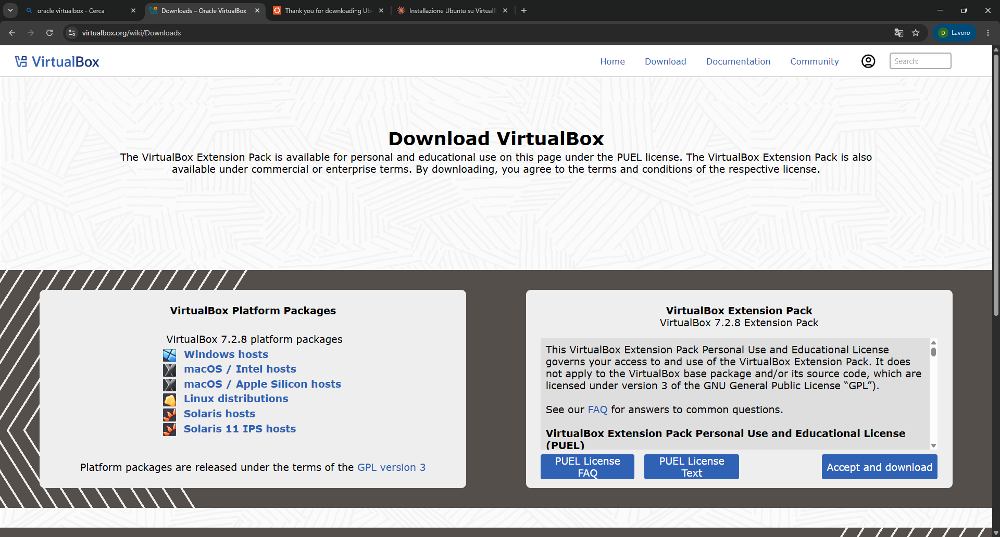
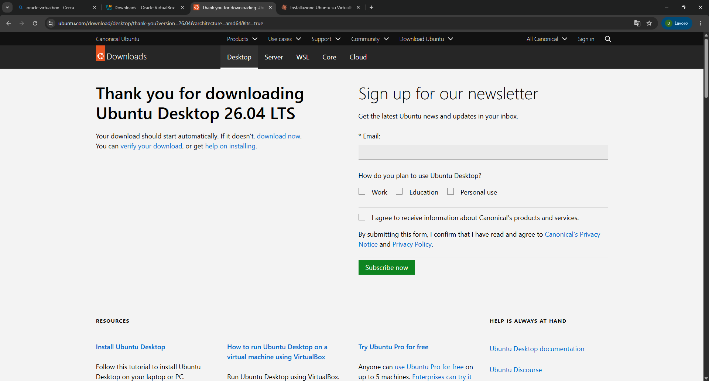
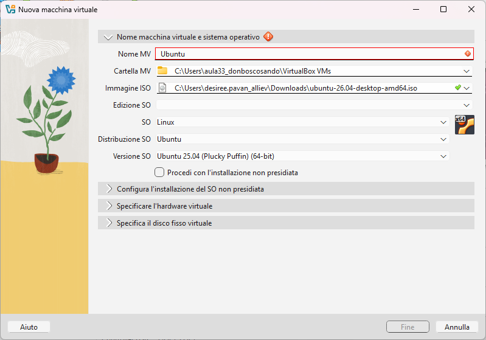
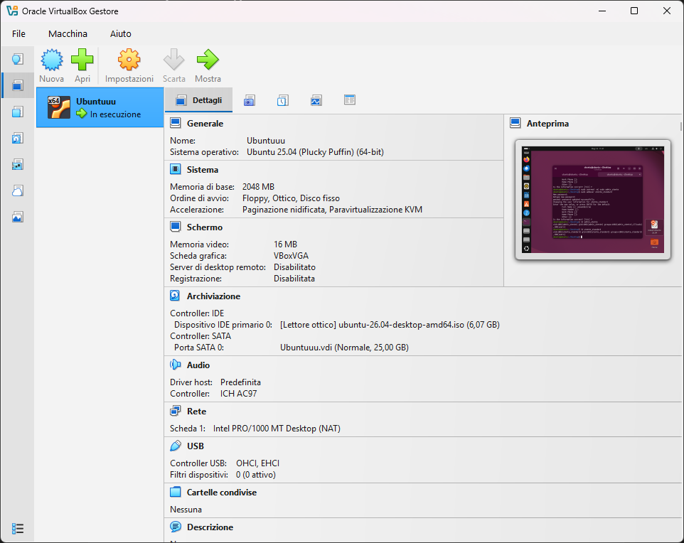
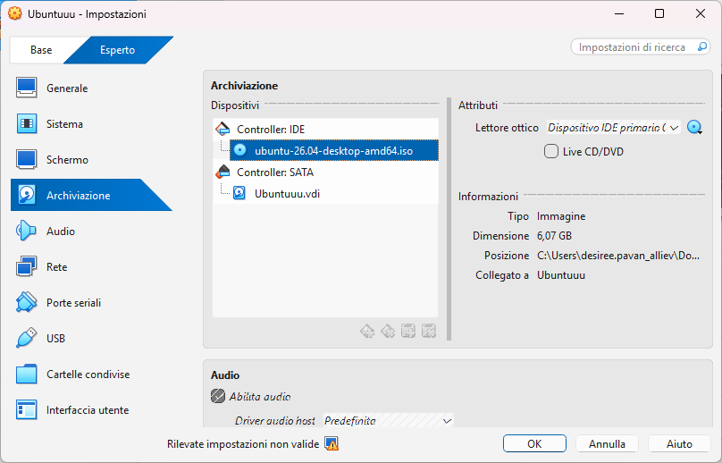
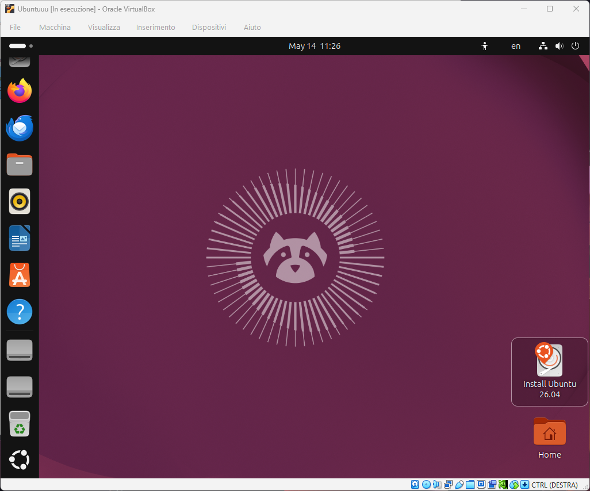
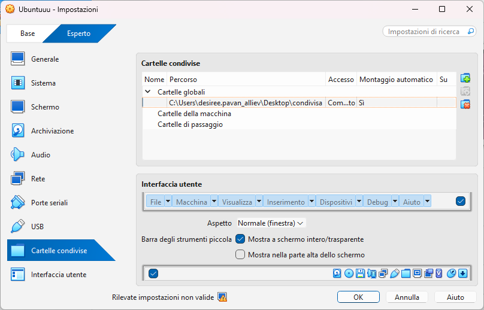
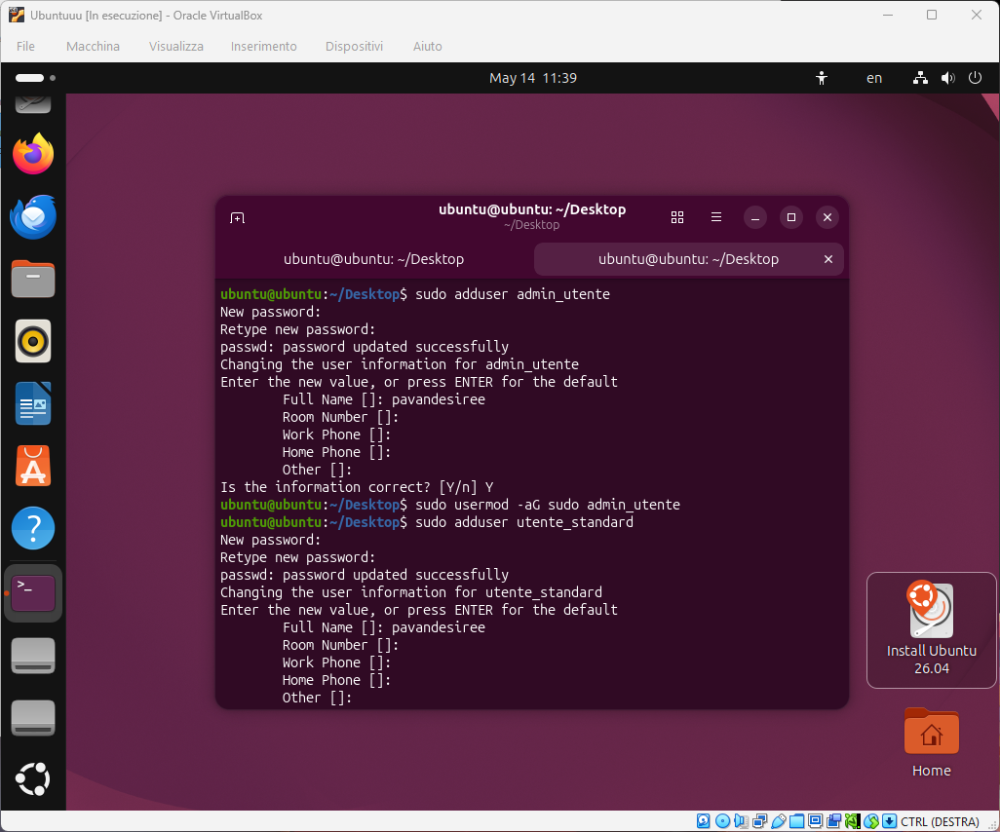
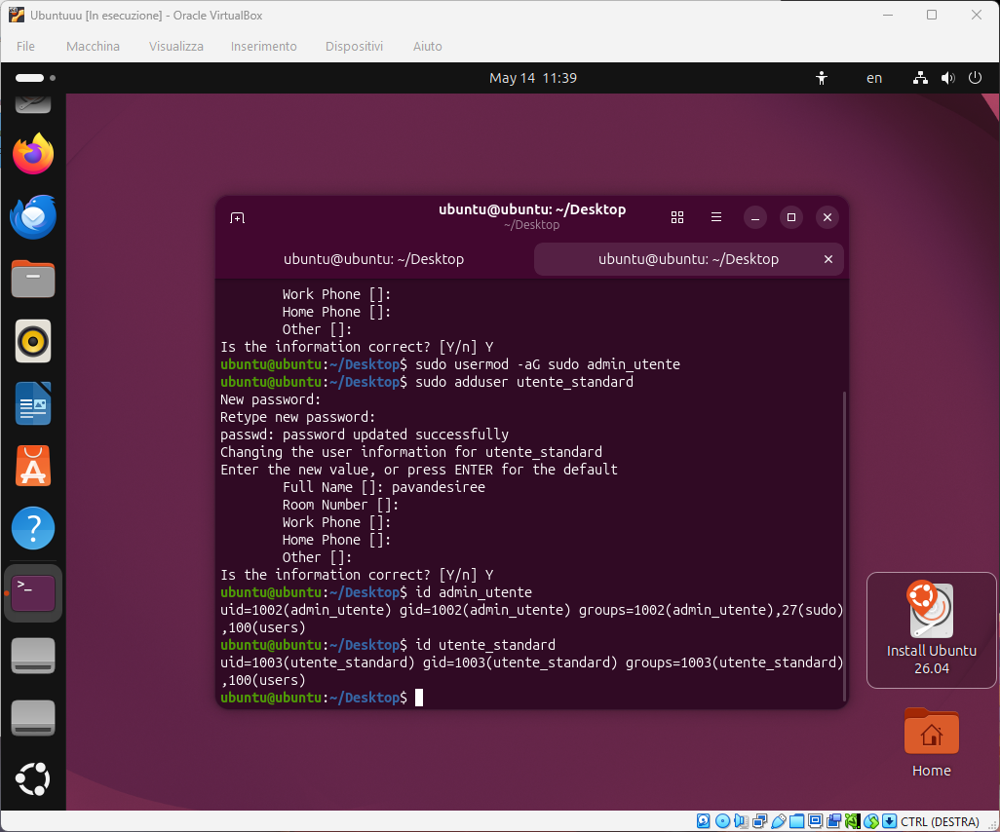

Lavori realizzati
- Ricerca autonoma sui sistemi operativi e sulla loro evoluzione.
- Risposte a domande base, intermedie e pratiche.
- Creazione di una presentazione PowerPoint sui Sistemi Operativi.
Questo sito raccoglie il programma svolto e i materiali realizzati durante il percorso di Sistemi Operativi: ricerca teorica, domande con risposte, presentazione PowerPoint, sintesi su Unix e progetto di virtualizzazione con Ubuntu.
In questa parte vengono presentati i lavori svolti sul sistema operativo come software di base, sul ruolo del kernel, sulla gestione delle risorse e sul confronto tra i principali sistemi operativi moderni.
ps, top, chmod,
chown, free -h e kill.
Unix è uno dei sistemi operativi più importanti nella storia dell’informatica perché ha influenzato direttamente Linux, macOS e molti sistemi moderni.
In questa attività è stata installata e configurata una macchina virtuale con Ubuntu tramite Oracle VirtualBox, con cartella condivisa, Guest Additions e gestione di utenti con privilegi diversi.
Le immagini mostrano le principali fasi del progetto: download dei software, configurazione della macchina virtuale, installazione di Ubuntu, cartelle condivise e gestione degli utenti.








